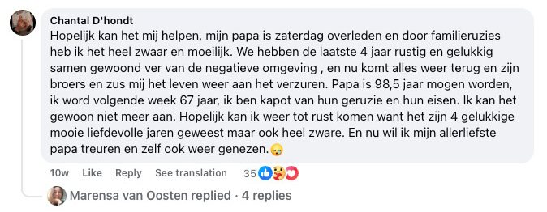
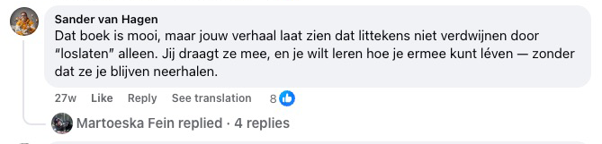
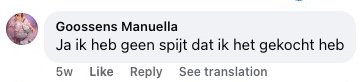
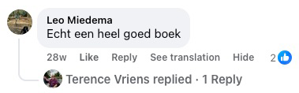
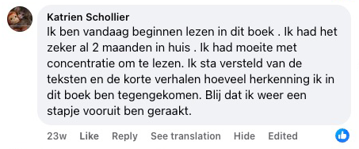

Objav prekvapivú metódu, ktorá ti pomôže zastaviť príval myšlienok, upokojiť emócie a nájsť vnútorný pokoj — bez sebadeštruktívnych návykov a bez predstierania, že je všetko v poriadku, keď nie je.
Ak už nechceš ďalej nosiť v sebe bolesť, ktorá ti nič nedáva – zlomené srdce, ktoré ťa stále prenasleduje, pocit viny, ktorého sa nedokážeš zbaviť, alebo hnev, ktorý ťa drží v zajatí – potom ti táto kniha dá nástroje, pochopenie a hlavne úľavu, po ktorej už tak dlho túžiš.

Táto kniha je pre TEBA, ak...
Máš čerstvo po rozchode a nedokážeš prestať myslieť na svojho ex
stále kontroluješ jeho sociálne siete a dúfaš v správu, ktorá nikdy nepríde
Užiera ťa pocit viny za niečo, čo si urobila – alebo neurobila
v hlave si stále dokola prehrávaš, čo si mala povedať inak, a každý deň sa za to trestáš
V noci nemôžeš spať, pretože sa ti myšlienky stále honia hlavou
zaspávaš vyčerpaná, ale hlava odmieta vypnúť a ráno sa budíš ešte unavenejšia
Cítiš hnev alebo zášť voči niekomu, kto ti ublížil
a aj keď vieš, že ťa to ničí, nedokážeš to pustiť z hlavy
Nesieš si v sebe bolesť zo zrady, ktorú si nikdy nespracovala
partner, kamarátka alebo rodina ťa zradili a tá rana sa stále nezahojila
Cítiš sa uväznená v minulosti a nedokážeš ísť ďalej
žiješ v spomienkach na to, čo bolo, namiesto v prítomnosti
Bojíš sa, že ťa ľudia opustia, a robíš všetko pre to, aby si o nikoho neprišla
aj keby to znamenalo, že stratíš samu seba
Cítiš vnútri prázdnotu a už nevieš, kto si bez tej bolesti
akoby sa tvojou identitou stalo utrpenie, ktoré si nesieš so sebou
9 dôvodov, prečo ti táto kniha môže zmeniť život
začni tu, keď budeš mať dosť bolesti, nekonečného premýšľania a vnútorného chaosu.
- → Ako sa vyrovnať so zlomeným srdcom – nauč sa premeniť bolesť z rozchodu alebo straty na silu a vnútorný pokoj
- → Koniec večného trápenia v hlave – objav praktické techniky, ako prelomiť nekonečné mletie myšlienok
- → Odpustiť, ale nezabudnúť – nájdi rovnováhu medzi odpustením a ochranou seba samej pred ďalšou bolesťou
- → Emočná sloboda – vymaň sa z okov hnevu, viny a strachu, ktoré ťa držia v zajatí už roky
- → Obnova sebavedomia – znovu vybuduj svoj pocit vlastnej hodnoty po období emočných rán
- → Zdravé hranice – nauč sa povedať „nie" bez pocitu viny a chráň svoj vnútorný pokoj
- → Spracovanie minulosti – prestaň žiť v spomienkach a začni stavať svoju budúcnosť
- → Lepší spánok – upokoj myseľ pred zaspaním a prebúdzaj sa oddýchnutá namiesto vyčerpaná
- → Nový začiatok – objav, ako z bolesti urobiť svojho najväčšieho učiteľa a vybudovať život, na ktorý budeš hrdá

📋 Špecifikácia produktu
| Názov | Pusti to, čo ťa ničí |
| Autor | Joris de Vries |
| Počet strán | 320 strán |
| Súčasťou | Praktické cvičenia v závere knihy |
| Jazyk | Slovenčina |
| Väzba | Brožovaná (paperback) |
| Cena | 35 € 32 € vrátane DPH |
| Doprava | Zadarmo (po celom Slovensku, Packeta) |
| Záruka | 30 dní na vrátenie peňazí |
Táto kniha môže byť presne to, čo ti v živote doteraz chýbalo 💫
Možno už máš za sebou množstvo pokusov. Prečítala si knihy, ktoré zneli krásne, ale nikdy nešli naozaj do hĺbky. Vyskúšala si terapeutické metódy, ktoré sľubovali úľavu, ale v praxi nič nezmenili. A predsa si tu – pretože vnútri vieš, že stále existuje nádej. Že vnútorný pokoj je možný. Že bolesť, ktorú si nesieš, tu nemusí zostať navždy.
📘 Pusti to, čo ťa ničí nie je len ďalšia kniha do knižnice. Je to praktický sprievodca od Jorisa de Vriesa, napísaný na základe jeho vlastnej skúsenosti s chronickým premýšľaním, pocitom viny, úzkosťou a vnútorným chaosom. Táto kniha ti pomôže:
- prestať sa trestať za minulosť,
- prelomiť špirálu negatívnych myšlienok,
- a znovu nájsť dôveru v seba a svoju cestu.
A to všetko zrozumiteľne a ľudsky – bez jediného klišé.
💛 A to stále nie je všetko, čo dnes získaš:
- Knihu (320 strán) plnú praktických nástrojov, ktoré naozaj fungujú
- Praktické cvičenia v závere knihy, ktoré ti pomôžu preniesť teóriu do praxe
- Dopravu zadarmo po celom Slovensku cez Packetu
- 30-dňovú záruku vrátenia peňazí – bez otázok, bez rizika
✨ Urob dnes prvý krok.
Klikni na tlačidlo nižšie a objednaj si svoj výtlačok ešte dnes. Nie preto, že „musíš". Ale preto, že si zaslúžiš cítiť sa dobre. Bez pocitu viny. Bez masky. A konečne – svojím vlastným tempom 🌱
MONEY
BACK
Predĺžená záruka vrátenia peňazí
30 dní namiesto 14 dní – kniha ťa nenadchla? Máš celých 30 dní na to, aby si ju vrátila a dostala peniaze späť.
📖 Prečítaj si ukážku z našej knihy. Obsahuje teóriu aj praktické cvičenia, ktoré reagujú na tvoje individuálne potreby 🎯


Ak si už unavená z boja sama so sebou...
Ak ťa v noci prenasleduje, čo si povedala, nepovedala, o čo si prišla alebo čo si pokazila...
Ak stále dúfaš, že sa to možno spraví, alebo že to raz prejde samo – ale ďalej ostávaš uväznená vo vlastnej hlave a nič sa nemení...
Potom je toto najdôležitejšia kniha, akú kedy otvoríš.
A tu je dôvod:
Myšlienky mi v hlave krúžili stále dokola – ako nekonečná slučka, ktorá sa nikdy nezastaví.
„Čo keby som to vtedy povedal inak?"
„Možno by sme potom ešte mohli byť spolu."
„Všetko je to moja vina."
Každý deň pôsobil ako scenár, ktorý sa opakuje – úzkosť, spomienky, prehrávanie každého rozhovoru, každého ticha. A doma?
Prázdnota. Nie fyzická, ale vnútri.
Obklopovali ma veci, ktoré mi pripomínali, o čo som prišiel. A čo som možno nikdy nemal pustiť. Skúšal som všetko: terapie, afirmácie, meditácie, presviedčanie seba samého...
Ale nič nešlo naozaj do hĺbky. Nič nefungovalo. Len ďalší deň... rovnaká bolesť... rovnaké otázky.
„Prečo nedokážem ísť ďalej?"
„Čo je so mnou zle?"
„Prečo stále dúfam?"
Cítil som, že strácam sám seba.
A začal som pochybovať, či ešte niekedy nájdem vnútorný pokoj.

Každý deň bez tejto knihy je ďalší deň uväznená vo vlastnej hlave.
Koľko hodín si už premárnila prehrávaním toho, čo sa stalo – „Keby som to vtedy urobila inak..."
Koľkokrát si si priala, aby tá bolesť konečne prestala?
Aby bolo vnútri konečne ticho?
Každá minúta bez správneho vedenia ťa stojí viac stresu, než si zaslúžiš.
A každý deň, keď to odkladáš, je deň, keď zostávaš uväznená v starej bolesti.
Jedného dňa som si povedal: „Dosť!"
Mal som po krk života v tieni bolesti, viny a vnútorného chaosu.
Začal som hľadať odpovede – a práve to ma priviedlo k poznaniam, ktoré mi navždy zmenili život.
Vďaka týmto princípom som prestal byť väzňom vlastných emócií.
A namiesto vnútornej vojny som konečne našiel pokoj, po ktorom som roky túžil. Čo sa stalo potom?
Ľudia okolo mňa si začali všímať zmenu.
Pýtali sa:
„Ako sa ti to podarilo?"
A tak som začal zdieľať to, čo naozaj funguje. Žiadne teórie. Žiadne prázdne slová. Ale to, čo pomáha v skutočných chvíľach bolesti, straty, viny a hnevu.
Výsledkom je táto kniha. Kniha, ktorá nie je len o „odpustení", ale o tom, ako znovu nájsť sám seba.
O uzdravení. A o tom, ako si prestať ubližovať. Je jedno, či ťa trápi čerstvý rozchod, dávna zrada, alebo roky nespracovaného pocitu viny – voči sebe alebo niekomu inému.
Táto kniha ti ukáže, ako nájsť cestu späť k sebe.
Po svojom.
Bez masky.
Bez tlaku.
Bez hanby.
A vieš čo?
Nie som jediný, komu to zafungovalo.
Ich príbehy aj ten môj. Ľudia, ktorí roky nedokázali pustiť svoju bolesť, zrazu začali zase voľne dýchať.
Tí, ktorí sa topili v pocite viny, sa prvýkrát pozreli do zrkadla bez hanby.
A tí, ktorí sa cítili úplne stratení, našli cestu späť k sebe.
A pozor – tento prístup funguje tak dobre preto, že sa naozaj dotýka toho, čo nás vnútri drží.
Od vnútorného ochromenia po výbuchy hnevu. Od osamelosti po nosenie masky.
Od neschopnosti pustiť minulosť po nenávisť k sebe. Každý krok v tejto knihe je starostlivo vystavaný tak, aby viedol k skutočnej úľave – nie len k inšpirácii na pár dní.
A výsledky?
Presne to, po čom všetci túžime: úľava, pokoj a pocit, že si konečne zase doma – vo svojom tele, vo svojej hlave aj vo svojom srdci.
A vieš čo?
Mohol by som o tom napísať samostatnú knihu – len o príbehoch ľudí, ktorým tento prístup úplne zmenil život.
Tieto metódy som totiž zdieľal s ľuďmi všetkých vekových kategórií, z najrôznejších životných situácií a s tými najrozličnejšími vnútornými bolesťami. Od tých, ktorí práve prechádzali čerstvým rozchodom…
Až po tých, ktorí 20 rokov potláčali hnev. Od ľudí s úzkosťami, ktorí sa báli už len rána…
Až po tých, ktorí vnútri už vôbec nič necítili. A výsledok? Úľava, akú si predtým nedokázali ani predstaviť.
Vnútorné ticho tam, kde bol celý život krik.
Dýchanie bez bolesti. A priestor – pre nové, jemné začiatky.
Niektorí „experti" sa ma dokonca pýtali:
Funguje to naozaj?
Nie je to trochu príliš jednoduché?
Nuž…
k tomu sa o chvíľu vrátime. Ale najprv – poďme sa pozrieť na ďalšie dôkazy, že táto cesta skutočne funguje.

📚 Čitatelia po celej Európe našli vďaka tejto knihe pokoj – začínali rovnako ako ty: unavení, preťažení, ale pripravení na zmenu ✨
Akoby niekto mávol čarovným prútikom…
Čím viac som počúval od čitateľov, ktorí zápasili s bolesťou, stratou alebo vnútorným bojom, tým jasnejšie to bolo: tieto princípy fungujú všade.
Cítil som, že tento prístup je iný – ale spočiatku som presne nevedel prečo. Tak som šiel hlbšie. Začal som vidieť vzorce.
Opakujúce sa vnútorné dialógy, obranné mechanizmy, ktoré sa vracali stále dokola.
Testoval som. Pozoroval. Premýšľal. A krok za krokom som vybudoval metódu, ktorá nerieši len príznaky, ale príčinu. A výsledky?
Ľudia, ktorí si mysleli, že sa nikdy nezmenia, zrazu pocítili naozajstnú úľavu.
Tí, ktorí verili, že „takto to jednoducho mám", začali znovu rásť.
A kto sa cítil úplne stratený, našiel zase svoj kompas.
Odvtedy som túto metódu použil na takmer všetky boľavé miesta, ktoré ľudí najviac trápia:
- Pocit viny a hanba: Nauč sa, ako si odpustiť a prestať sa trestať za chyby z minulosti. Namiesto toho začneš zase cítiť ľahkosť a vlastnú hodnotu.
- Hnev a zášť: Dostaneš nástroje, ako nechať staré rany odísť a prestať v hlave bojovať s ľuďmi, ktorí ti ublížili. Nie kvôli „vyrovnaniu účtov", ale s istotou, že nad tebou už nemajú moc.
- Pocit osamelosti: Nauč sa, ako si vytvoriť bezpečie sama v sebe, aj keď okolo nie je nikto, kto by ťa chápal. Zistíš, že byť sama neznamená prázdnotu.
- Neustále premýšľanie: Prestaneš si prehrávať scenáre „čo keby" a naučíš sa zastaviť špirálu myšlienok skôr, než ťa pohltí. Tvoja myseľ bude zase miestom pokoja, nie územím strachu.
- Strach zo straty / opustenia: Objav, ako zaobchádzať s hlbokým strachom, že o niekoho prídeš – bez toho, aby si sa vzdala potreby blízkosti alebo vlastnej hodnoty.
- Uviaznutie v minulosti: Nauč sa, ako prestať žiť v minulosti – a konečne urobiť svoj prvý skutočný krok vpred. Nie len „hoď to za hlavu", ale naozajstné uzdravenie zvnútra.
A funguje to v každej situácii, keď sa snažíš pustiť niečo, čo ťa vnútri zväzuje.
Tieto princípy môžeš použiť vo svojom vlastnom živote – a konečne začať žiť s ľahkosťou, pokojom a istotou, že to zvládneš.
Toto nie je teória. A nie sú to ani prázdne spirituálne reči.
Je to praktický systém, ktorý pomáha čitateľom po celej Európe vyrovnať sa s vinou, smútkom, strachom, hnevom a stagnáciou.
Každý nástroj v tejto knihe vychádza priamo z osobnej skúsenosti – zrodil sa z rokov hľadania, skutočných príbehov, pádov a vstávania.
A práve preto som sa rozhodol svoje poznania zdieľať. Aby si nemusela prejsť rovnakou bolesťou ako ja.
Tými nekonečnými večermi, keď sa rúcaš pod vlastnými myšlienkami. Tým vyčerpávajúcim pocitom, že skúšaš všetko… a nič nefunguje.
Tým tichým zúfalstvom, keď si hovoríš:
„Možno to už nikdy neprejde."
Ale tam zostať nemusíš.
Táto kniha ti ukáže, že existuje iná cesta – a že je bližšie, než si myslíš.
A chápem, ak ešte váhaš. Ale neboj sa – o chvíľu ti prezradím „tajomstvo", prečo toto všetko zdieľam… a prečo to nestojí tisíce eur.
Ale najprv – poďme sa pozrieť na…
Zákazníci z Holandska, Belgicka, Švédska, Nórska a Nemecka
našli v tejto knihe sami seba.
Pochopenie je začiatok uzdravenia 💡
📌 Oficiálne recenzie z Holandska — bez jediného vymysleného slova.
Recenzie, ktoré vidíš nižšie, sú skutočné príspevky a komentáre z Facebooku z krajín, kde kniha vyšla ako prvá a kde si ju už prečítali tisíce čitateľov — preto sú v holandčine.
Nechceli sme klamať. Nechceli sme vymýšľať falošné recenzie ani nič prikrášľovať, aby to pôsobilo presvedčivejšie.
Preto sme sa vedome rozhodli zverejniť recenzie presne tak, ako ich čitatelia sami napísali — v pôvodnom jazyku, bez prekladania, úprav alebo zmeny jediného slova. Tak máš istotu, že čítaš naozajstné slová od naozajstných čitateľov.
Samotná kniha je pritom plne lokalizovaná do slovenčiny — spisovne, gramaticky a s citom pre jazyk.
📖 Tip: na prečítanie recenzií v slovenčine použi funkciu prekladu vo svojom prehliadači.
Čo o knihe píšu čitatelia — preložené do slovenčiny
Posúvaj recenzie doľava a doprava. Pod každým prekladom nájdeš originálny komentár z Facebooku, takže si pravosť môžeš kedykoľvek overiť sama.













Kto je autorom tejto knihy?

Volám sa Joris de Vries. A túto knihu som nenapísal zo slonovinovej veže – ale z najhlbšej jamy svojho života.
Pred pätnástimi rokmi som stratil všetko, čo som poznal.
Môj vzťah sa zrútil. Sebavedomie zmizlo. V noci som ležal s otvorenými očami, uväznený v nekonečných slučkách myšlienok. Pocit viny ma užieral zvnútra. Už som nevedel, kto som, ani prečo ráno vstávať.
Skúšal som všetko. Príručky o sebarozvoji, podcasty, meditačné aplikácie, rozhovory s priateľmi. Nič sa nedotklo jadra.
Kým mi nedošlo, že odpoveď musím nájsť sám.
Začal som čítať. Nie jednu knihu, ale stovky. O neurovede, filozofii, psychológii. Cestoval som, hovoril s ľuďmi, ktorí si prešli tým istým, a pomaly som skladal dieliky skladačky dohromady.
Trvalo mi to roky. Roky pádov a vstávania. Recidív a prielomov. Pochybností a nakoniec – oslobodenia.
- Sám som si prešiel najhlbšími údoliami – a našiel cestu späť
- Roky samoštúdia neurovedy, filozofie a ľudského správania
- Vyvinul som vlastnú metódu, ktorá pomohla mne aj ďalším
- Všetko, čo som sa naučil, som zhrnul do tejto knihy – aby si nemusela ísť rovnakou obchádzkou
To, čo som objavil, mi zmenilo život:
Väčšina ľudí netrpí tým, čo sa im stalo – ale tým, čo si o tom myslia.
Toto poznanie sa stalo základom tejto knihy.
Je kombináciou:
- Poznatkov z neurovedy (ako ťa tvoj mozog sabotuje)
- Východnej filozofie (umenie nechať veci odísť)
- Praktických cvičení (konkrétne kroky, ktoré fungujú hneď)
📖 Čitatelia knihy Pusti to, čo ťa ničí zažívajú už počas prvých týždňov skutočnú zmenu — viac pokoja, jasnej hlavy a emočnej úľavy 🌟

Možno to nie je prvá kniha, ktorú čítaš 📖
A možno práve preto by mohla byť tou poslednou, ktorú naozaj potrebuješ.
Možno si už vyskúšala všetko možné.
Rady, ktoré zneli pekne, ale nič nezmenili.
Metódy, ktoré fungovali… do ďalšieho pádu.
A predsa si tu. A to niečo znamená. Znamená to, že si ešte nestratila vieru.
Že vnútri stále vieš, že úľava je možná. Že pokoj nie je sen, ale zručnosť. A že tvoja bolesť k tebe nemusí patriť navždy.
📚 Pusti to, čo ťa ničí nie je náplasť – je to mapa. Mapa späť k sebe.
Autor Joris de Vries v tejto knihe zdieľa jasné, funkčné a ľudské kroky, ktoré pomohli jemu aj ďalším:
- pustiť vinu a sebatrestanie,
- prelomiť kruh premýšľania a vnútorných hlasov,
- znovu nájsť dôveru – v seba, v život aj v druhých.
Nečakaj žiadne ezoterické reči. Ani tvrdú psychológiu bez súcitu. Čakaj naozajstnosť. Otvorenosť. A úľavu.
✨ Prvý krok je malý. Ale môže zmeniť všetko.
Nemusíš mať všetko vyriešené, aby si mohla začať. Nemusíš byť silná – stačí byť otvorená myšlienke, že to ide aj inak.
👉 Klikni na tlačidlo a začni čítať.
Možno tu nájdeš ten pokoj, ktorý si celý čas hľadala.
Doprava zadarmo
Po celom Slovensku cez Packetu – poštovné platíme za teba. Ty platíš len za knihu – o zvyšok sa postaráme my.
🎁 Bonusy nižšie sú dostupné iba dnes k objednávkam knihy Pusti to, čo ťa ničí – nenechaj si túto jedinečnú príležitosť ujsť! ⏰

🎁 #1 BONUS: E-kniha Riešenie nadmerného premýšľania
Túto exkluzívnu bonusovú e-knihu dostaneš zadarmo, keď si objednáš ešte dnes. Obsahuje praktické nástroje a cvičenia, ktoré dokonale dopĺňajú hlavnú knihu.
- Pracovné listy navyše pre hlbšie poznanie seba samej
- Každodenné cvičenia, ako teóriu preniesť do praxe
- Exkluzívne poznatky, ktoré inde nenájdeš
- Na stiahnutie ihneď po objednávke

🎁 #2 BONUS: E-kniha Láska bez cenzúry
Pravda o vzťahoch, o ktorej sa nikto neodváži hovoriť. Prestaň sa zaliečať všetkým. Prestaň strácať samu seba vo vzťahu, ktorý ťa vyčerpáva, zraňuje a pomaly ničí. Získaj späť svoju silu, jasnosť a schopnosť voliť to, čo chceš ty – nie to, čo od teba čakajú ostatní.
Toto nie je príjemná príručka o komunikácii. Táto kniha je konfrontácia sama so sebou. Prečo si tam, kde si. A čo musíš urobiť, aby si sa z toho dostala.
Cítiš, že vo tvojom vzťahu niečo nesedí? Pochybuješ, či je to tebou – alebo tým druhým? Stratila si spojenie, príťažlivosť alebo samu seba? Táto kniha rozbije tvoje ilúzie. A pomôže ti znovu sa postaviť na nohy.
- Odhaľ svoje vzorce sebazničenia a nauč sa s nimi pracovať
- Získaj kontrolu nad svojimi emóciami, strachmi a reakciami
- Pochop, čo znamená naozajstná oddanosť – a kedy je čas odísť
- Prevezmi plnú zodpovednosť a vytvor vzťah, ktorý naozaj funguje
- Nečakaj, kým sa zmení ten druhý. Zmeň seba – a všetko sa zmení s tebou
Možno sa práve teraz pýtaš – „Prečo by som mala míňať peniaze na túto knihu?" 🤔📘 Odpoveď je jednoduchá:
Máš 30 dní na vyskúšanie – a keby ti kniha nesadla? Dostaneš peniaze späť.
Žiadne otázky, žiadne komplikácie. Ale obe vieme, že ju vracať nebudeš. Pretože len čo začneš čítať, ucítiš, že táto kniha ti môže zmeniť život.
Čím je táto kniha iná:
- Praktická použiteľnosť – Táto kniha neponúka len poznatky, ale aj konkrétne kroky, ktoré môžeš hneď použiť vo svojom každodennom živote.
- Postavená na skúsenosti – Metódy vychádzajú z osobnej skúsenosti a rokov samoštúdia, takže vieš, že sa učíš poctivé, overené nástroje.
- Zameranie na hlboké uzdravenie – Na rozdiel od iných kníh mieri táto na jadro tvojej emočnej záťaže, nie len na povrchové príznaky.
- Emočná blízkosť – Kniha je napísaná s empatiou a pochopením, takže sa na svojej ceste k vnútornému pokoju budeš cítiť vypočutá a podporená.
- Jedinečné vhľady – Kniha prináša prekvapivé uhly pohľadu, ktoré inde nenájdeš, a vďaka nim sa na seba a svoje emócie pozrieš úplne novými očami.
Kniha, ktorú čítaš vlastným tempom
Žiadny zhon, žiadny tlak. Začni, keď budeš pripravená, a doprej si toľko času, koľko potrebuješ.
Praktické nástroje na každý deň
Vďaka konkrétnym cvičeniam v závere knihy môžeš začať hneď – krok za krokom, svojím tempom.
Zaslúžiš si byť slobodná
Odpustiť a nechať veci odísť nie je slabosť – je to sila. Táto kniha ti pomôže urobiť miesto pre to, čo ťa naozaj robí šťastnou.
📦✨ Pripravená začať? Objednaj ešte dnes a knihu ti doručíme až domov 📘🙏
Tvoja cesta k vnútornému pokoju začína tu.
📘 Knihu — s cvičeniami v závere, ktoré ti pomôžu preniesť ju do praxe — získaš len za 35 € 32 € – menej než večera pre dvoch alebo plná nádrž benzínu.
Ale na rozdiel od týchto vecí ti táto kniha dá hodnotu na celý život. 💎💚
Pomôže ti nájsť vnútorný pokoj, pustiť bolesť, ktorú v sebe držíš už roky, a znovu cítiť, že si sama v sebe doma. ❤️
Vďaka tejto malej investícii získaš praktické nástroje, ktoré môžeš používať celé roky – kedykoľvek ich budeš potrebovať, svojím vlastným tempom. 🌱
❓ Otázky, na ktoré sa pýtaš najčastejšie 💬
Funguje to naozaj? Nie je to len ďalšia prázdna kniha o sebarozvoji?
Tvoje pochybnosti úplne chápem. „Pusti to, čo ťa ničí" nie je typická sebarozvojová kniha plná vágnych rád alebo pekných citátov. Je postavená na osobnej skúsenosti a rokoch samoštúdia neurovedy, filozofie a ľudského správania. Joris de Vries tieto techniky vyvinul potom, čo si sám prešiel hlbokou krízou a našiel cestu späť. Rozdiel je v praktických, konkrétnych krokoch, ktoré naozaj fungujú – aj vo chvíli, keď sa cítiš na dne. A vďaka našej 30-dňovej záruke vrátenia peňazí neriskuješ vôbec nič.
Už som toho vyskúšala toľko – prečo by toto malo byť iné?
Je pochopiteľné, že si skeptická – je frustrujúce investovať čas a nádej do rôznych metód, ktoré nakoniec žiadnu skutočnú zmenu neprinesú. Táto kniha je iná vďaka priamemu, praktickému prístupu založenému na osobnej skúsenosti, nie na suchej teórii. Vznikla zo skutočného príbehu autora, ktorý predtým tiež „všetko" vyskúšal, ale úľavu nakoniec našiel vďaka vlastnej metóde. Na rozdiel od všeobecných rád tu dostaneš konkrétne techniky, ktoré fungujú aj vo chvíľach, keď sa cítiš vyčerpaná. A keby ti kniha predsa len nesadla, môžeš ju vďaka našej 30-dňovej záruke vrátenia peňazí vyskúšať úplne bez rizika.
Čo ak to u mňa fungovať nebude? Moja situácia je iná alebo zložitejšia.
Každý človek je jedinečný a nesie si svoj vlastný príbeh. Práve preto je „Pusti to, čo ťa ničí" navrhnutá tak, aby ponúkala flexibilné postupy, ktoré sa dajú prispôsobiť rôznym situáciám a úrovniam zložitosti – od čerstvých rozchodov po roky nespracovanej bolesti. Cvičenia v závere knihy ti umožnia aplikovať metódy na tvoje konkrétne okolnosti. Čitatelia s najrôznejšími príbehmi – od vyrovnávania sa so stratou cez pocity viny až po hnev a nepokoj – už v tejto knihe našli oporu. A nezabudni: ponúkame 30-dňovú záruku vrátenia peňazí bez nepríjemných otázok.
Nie je 32 € za knihu veľa?
Nedostávaš len knihu o 320 stranách – súčasťou sú aj praktické cvičenia v závere knihy a doprava zadarmo po celom Slovensku cez Packetu. Mnoho čitateľov nám napísalo, že im jediné poznanie z knihy ušetrilo množstvo času a energie. Za cenu jedného večera vonku získaš nástroje, ktoré môžeš používať celé roky. A pri objednávke viacerých výtlačkov navyše ušetríš až 40 € vďaka zvýhodneným balíčkom. S našou 30-dňovou zárukou vrátenia peňazí neriskuješ vôbec nič.
Nebolo by lepšie investovať do terapeuta než do knihy?
Terapia a táto kniha sa vôbec nevylučujú – naopak sa môžu skvele dopĺňať. Množstvo ľudí používa túto knihu ako prvý krok na ceste k uzdraveniu, alebo ju číta popri terapii pre hlbšie porozumenie a precvičovanie medzi sedeniami. Za zlomok ceny niekoľkých terapeutických sedení získaš nástroje, ktoré môžeš použiť, kedykoľvek ich potrebuješ – uprostred noci, v súkromí domova, svojím tempom. Môžeš začať hneď, bez čakacích lehôt. A ak budeš neskôr potrebovať osobné vedenie, dá ti táto kniha pevný základ, vďaka ktorému z terapie vyťažíš oveľa viac.
Kto je Joris de Vries? Môžem mu veriť?
Joris de Vries je autor, ktorý si sám prešiel hlbokou osobnou krízou – a vyšiel z nej silnejší. Po rokoch samoštúdia neurovedy, filozofie a ľudského správania vyvinul praktickú metódu, ktorá mu pomohla pustiť to, čo ho ničilo. Metódy v tejto knihe nie sú teoretické – zrodili sa zo skutočnej osobnej skúsenosti. Jeho prístup kombinuje poznatky z rôznych odborov, prevedené do zrozumiteľných techník, ktoré zvládne použiť každý. Jeho postup môžeš vyskúšať bez rizika vďaka našej plnej 30-dňovej záruke vrátenia peňazí.
Prečo nie je táto kniha bežne k dostaniu v kníhkupectvách?
Vedome sme zvolili priamy predaj, aby sme ti mohli ponúknuť čo najlepšiu skúsenosť. Vďaka tomu môžeme ponúkať dopravu zadarmo, zvýhodnené balíčky viacerých výtlačkov a osobnú 30-dňovú záruku vrátenia peňazí – veci, ktoré sú cez veľké platformy so 40–60 % províziou nemožné. Navyše tak môžeme poskytovať priamu zákaznícku podporu a rýchlo reagovať na tvoje otázky. Ty získaš za svoje peniaze viac a my s tebou môžeme budovať priamy vzťah.
Je kniha k dispozícii aj ako e-book?
Momentálne ponúkame knihu iba v tlačenej podobe – vrátane cvičení v závere, do ktorých môžeš priamo písať. Práca s ceruzkou v ruke je napokon súčasťou metódy: cvičenia fungujú najlepšie, keď si ich naozaj vyplníš. Ak by sa v budúcnosti objavila digitálna verzia, dáme o tom vedieť našim čitateľom e-mailom ako prvým.
Ako dlho trvá, než knihu dostanem?
Knihu doručujeme do 2–3 pracovných dní od objednávky. Odosielame obvykle do 24 hodín zo skladu cez Packetu – a doprava je úplne zadarmo, poštovné aj balné sú v cene. Po odoslaní ti príde potvrdzovací e-mail s údajmi na sledovanie zásielky. Keby doručenie z akéhokoľvek dôvodu trvalo dlhšie, pokojne nám napíš na podpora@pustitocotanici.sk a hneď to preveríme.
Pre koho je táto kniha určená? Hodí sa na moju situáciu?
Táto kniha je pre každého, kto zápasí s emočnou záťažou – či už ide o bolesť po rozchode, pocity viny, ktoré ťa stále prenasledujú, hnev, ktorý nedokážeš pustiť, neustále premýšľanie, strach z opustenia, alebo pocit, že si sa úplne stratila. Je napísaná pre ľudí v najrôznejších životných situáciách: od tých, ktorí nedávno zažili stratu, po tých, ktorí si roky nesú nevyriešenú bolesť. Kniha je zámerne písaná bez odborného žargónu, aby bola prístupná všetkým. Metódy si môžeš prispôsobiť svojim individuálnym potrebám vďaka praktickým cvičeniam v závere knihy.
Je 30-dňová záruka vrátenia peňazí naozaj bez komplikácií?
Úplne. Ak do 30 dní nepocítiš zlepšenie alebo z akéhokoľvek dôvodu nebudeš spokojná, dostaneš späť celú sumu. Stačí nám knihu poslať späť v 100 % perfektnom stave a len čo nám dorazí, vrátenie peňazí ihneď spracujeme. Žiadne zložité formuláre, žiadne nepríjemné otázky, prečo to nefungovalo, žiadne obštrukcie. Jednoducho napíš e-mail na podpora@pustitocotanici.sk a všetko za teba vybavíme. Robíme to preto, že hodnote tejto knihy plne veríme a chceme, aby si ju mohla vyskúšať bez obáv. Tvoja spokojnosť a pohoda sú dôležitejšie než predaj.
Ako spoznám, že mi táto kniha naozaj pomôže?
Každý človek je iný a konkrétne výsledky sľubovať nemôžeme. Čo ale povedať môžeme: kniha ponúka konkrétne cvičenia v závere, s ktorými môžeš začať hneď. Čitatelia nám pravidelne píšu, že im praktický prístup naozaj pomohol. Pre predstavu si môžeš prečítať recenzie na tejto stránke. A to najdôležitejšie: s našou 30-dňovou zárukou vrátenia peňazí neriskuješ vôbec nič. Nebude ti kniha fungovať? Dostaneš peniaze späť.
Je moja platba bezpečná? Môžem tejto firme veriť?
Tvoja platba je plne zabezpečená. Platby spracovávajú overené platobné služby, ktoré dbajú na to, aby bola platba bezpečná, rýchla a férová pre obe strany. Používame platobné brány spĺňajúce najvyššie bezpečnostné štandardy (SSL šifrovanie a PCI-DSS compliance). Tvoje finančné údaje u nás nikdy neukladáme – všetko spracováva priamo a bezpečne platobná brána. Sme registrovaná firma (Performance Marketing Solution s.r.o., IČO: 06259928) s transparentnými obchodnými podmienkami a zásadami ochrany osobných údajov. Navyše ponúkame plnú zákaznícku podporu na podpora@pustitocotanici.sk. A nezabudni: s našou 30-dňovou zárukou vrátenia peňazí aj tak nenesieš žiadne finančné riziko.